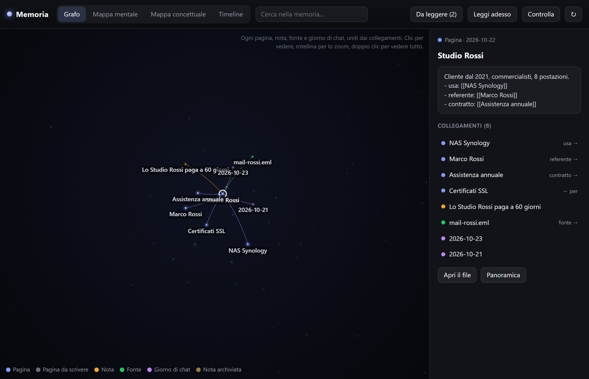
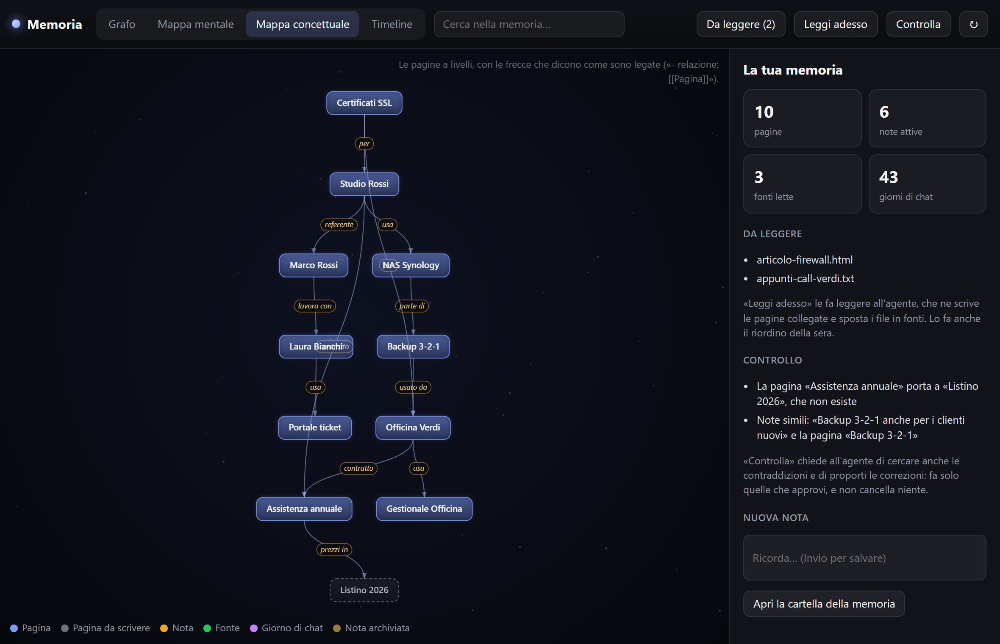
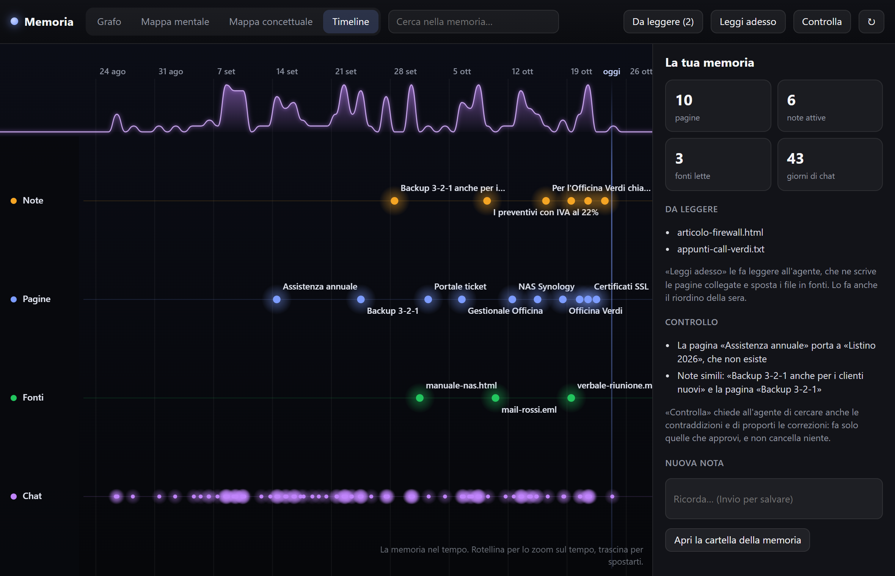

Memoria e secondo cervello
Cosa ricorda EasyIsland, come impara dai tuoi file e come esplorarlo in grafo, mappe e timeline.
La memoria di EasyIsland è fatta di file Markdown in %APPDATA%\EasyIsland\memoria, che puoi leggere e correggere con qualsiasi editor. Vale per tutti i motori. Si spegne insieme alla cronologia (Impostazioni → Chat → Cronologia).
#Le note: MEMORIA.md
Le cose da ricordare sempre, una per riga con la data: preferenze, clienti, persone, come si fa una cosa. Vanno davanti alla prima domanda di ogni conversazione (al massimo 4.000 caratteri, le più recenti prima), quindi costano pochi token.
- La chat le salva da sola quando dici qualcosa che vale anche per le prossime volte.
- Tu le salvi con
/ricorda …in chat, o dal campo Ricorda… della finestra Memoria. - Oltre 60 note, le più vecchie passano in
archivio.md, che resta cercabile. - Niente password o chiavi: la chat ha l'istruzione di non salvarle.
#Il diario
diario/AAAA-MM.md: una riga per ogni domanda con risposta (ora, motore, domanda, inizio della risposta). Lo scrive EasyIsland senza nessun modello, quindi non costa niente. La chat ci guarda solo quando serve («l'altra volta come avevamo risolto…?»).
#Le pagine collegate
pagine/<nome>.md: una pagina per argomento (una persona, un cliente, un progetto, un concetto), come in un wiki:
# Studio Rossi
fonte: mail-rossi.eml
aggiornata: 2026-10-24
Cliente dal 2021, commercialisti, 8 postazioni.
- usa: [[NAS Synology]]
- referente: [[Marco Rossi]]
- contratto: [[Assistenza annuale]][[Titolo]]collega un'altra pagina; una riga- relazione: [[Altra]]dice come sono legate.- Quando la chat cerca nella memoria, riceve le pagine trovate e una riga di quelle collegate: più contesto con poche parole.
- La chat le scrive quando le chiedi «fai una pagina su…», e dalle fonti (sotto).
- Scritture sicure: se modifichi a mano una pagina mentre l'agente ci lavora, la sua scrittura viene rifiutata; deve rileggerla e ripartire dalla tua versione.
#Da leggere: insegnare con i file
Metti nella cartella da-leggere articoli, appunti, trascrizioni di riunioni, mail salvate (.md, .txt, .html, .eml, .csv, .json…), oppure trascinali sulla finestra Memoria. Poi:
- l'agente legge ogni file;
- scrive o aggiorna le pagine giuste, con il nome del file in
fonte:e i collegamenti; - sposta il file in
fonti/, intatto.
Succede la sera con il Riordino della memoria o subito con Leggi adesso. I file che non sono testo (PDF, Word) vengono passati con il loro percorso: Claude Code li sa aprire.
#Il controllo
EasyIsland trova da sola: note simili o più vecchie di sei mesi, collegamenti a pagine che non esistono, pagine isolate, vecchie o sullo stesso argomento. L'agente aggiunge le contraddizioni che nota e ti propone le correzioni nell'isola, una per riga, con Fai tutto / Niente (o scrivi quali). Fa solo quelle approvate e non cancella mai: al massimo sposta una nota in archivio.md o una pagina in archivio/pagine.
Parte la domenica sera con il Riordino, se c'è qualcosa da sistemare, o subito con Controlla.
#Il riordino della sera
Impostazioni → Compiti → Riordino della memoria: ogni sera alle 22:30 l'agente
- rilegge il diario del giorno e ti propone al massimo 5 cose da ricordare (salva solo quelle che approvi);
- legge i file in
da-leggere; - la domenica fa il controllo.
Se non c'è niente da fare non parte e non costa niente.
#La finestra Memoria
Impostazioni → Chat → Memoria → Mappa apre una finestra tutta sua con la memoria disegnata in quattro modi.
#Grafo

Ogni pagina, nota, fonte e giorno di chat è una stella, unita alle altre dai collegamenti. Le stelle più collegate sono più grandi. Clic su una stella: si illuminano i suoi collegamenti, con scintille che li percorrono, e a destra vedi il testo e l'elenco dei collegamenti.
#Mappa mentale
Un argomento al centro e ciò che ne nasce, fino a tre anelli: ogni ramo ha il suo colore e cresce dal centro. Clic su un ramo per portarlo al centro.
#Mappa concettuale

Le pagine a livelli, dall'alto in basso, con frecce che dicono la relazione («usa», «referente», «contratto»…). Le pagine citate ma non ancora scritte sono tratteggiate.
#Timeline

La memoria nel tempo, in corsie: note, pagine, fonti e chat. In alto un'onda mostra quante domande hai fatto ogni giorno. Rotellina per lo zoom sul tempo (da anni a ore), trascina per spostarti.
#Nella finestra
- Cerca nella memoria…: illumina ciò che corrisponde; Invio va al primo.
- Da leggere (n): apre la cartella; Leggi adesso e Controlla avviano i compiti subito.
- Trascina file sulla finestra: finiscono in
da-leggere. - Ricorda…: una nota nuova.
- Pannello a destra: statistiche, file in attesa, risultati del controllo, oppure l'elemento scelto con Apri il file.
- Rotellina per lo zoom, trascinare per spostarsi, doppio clic per vedere tutto.
- Si aggiorna da sola quando l'agente scrive nella memoria.